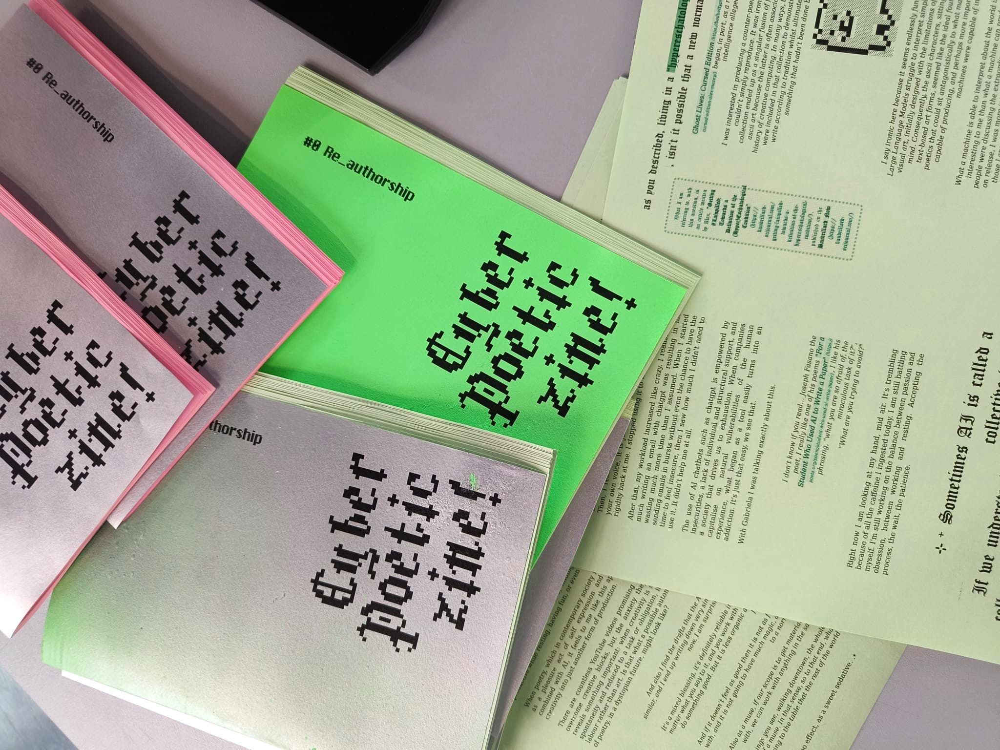
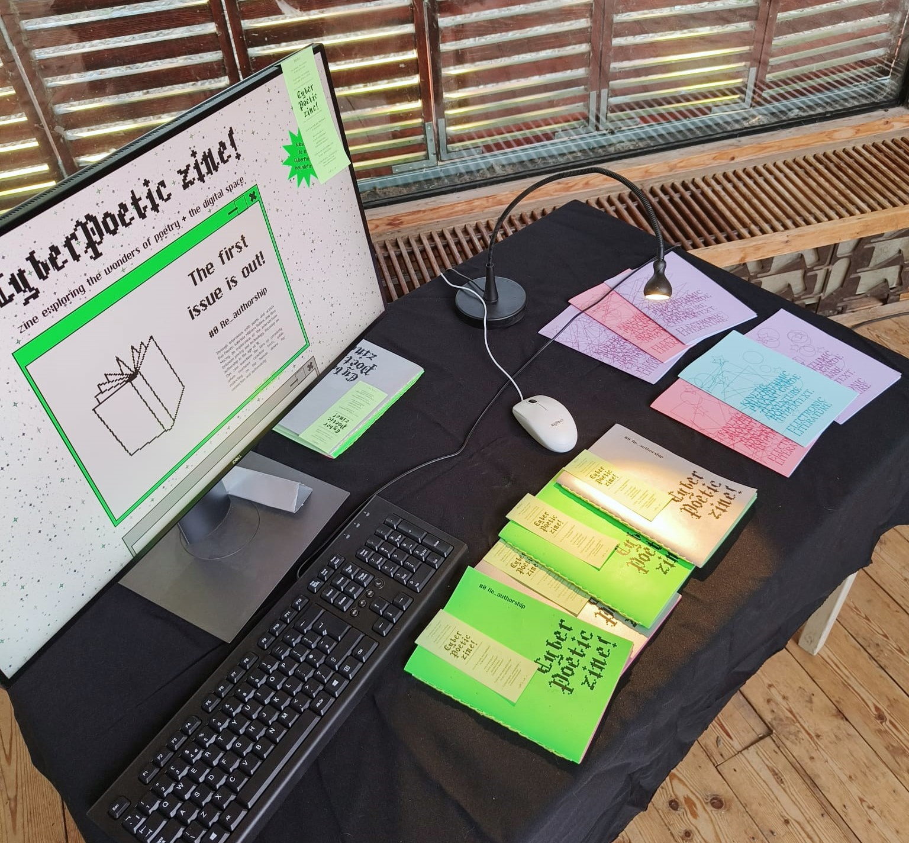
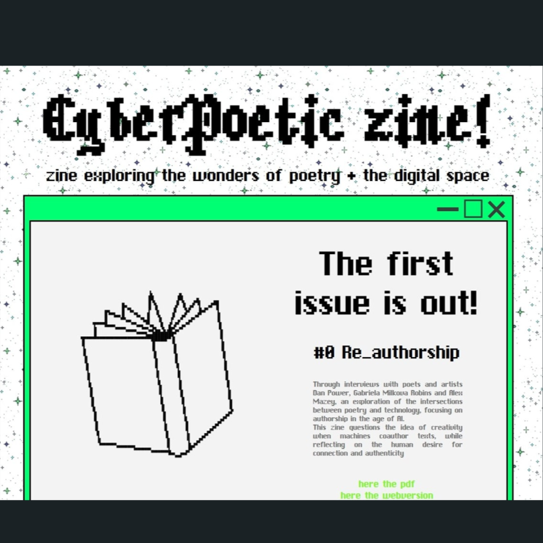
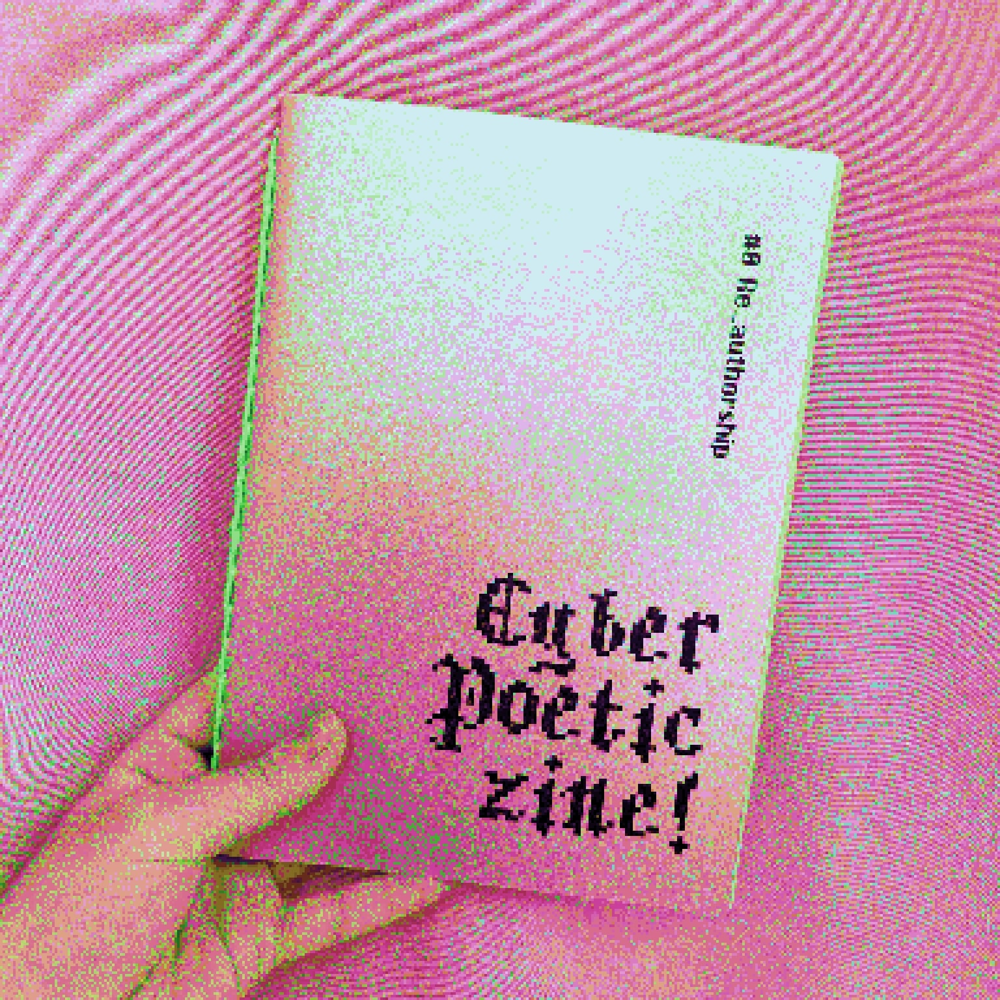

CyberPoetic zine!, Authorship in the age of AI




CyberPoetic zine! is a poetic web based zine project that explores the
evolving relationship between poetry and technology. The first issue
is called re_authorship. Through a blend of personal experiments and
conversations with poets and artist, re_authorship looks into how AI
is reshaping poetic and artistic expression. It's a glimpse at the
blurred line between human and machine creativity, reflecting on the
cultural and ethical implications of algorithmic language generation.
By questioning authorship, ownership, and labour, CyberPoetic zine,
with its first issue re_authorship, imagines new futures for poetry in
the age of AI. The zine is also made using Pre Post Print tools
(Weasyprint, Paged.js, html2print).
You can find its website here
cyberpoeticzine.net
✦ ✦ ✦